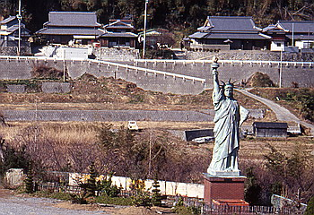

この珍スポ揃いの淡路島でも何故か地元の発行する観光地図には全く無視されている観光スポットがある。
その名は世界平和大観音像、寺名を豊清山平和観音寺という。地元出身者の奥内某氏が事業で財を成し、造られたという代物だ。
その高さは台座を含めて100m。その近くを通った者は絶対見逃すはずのない立派なモノだ。
でも地元の観光案内からは無視されている。
しかしこの立派な筈の大観音、どうも正面から見るとパッとしない（尤もパッとする大観音なんて聞いた事も無いけど）。
見れば首の辺りに展望台があるらしいのだが、そこが金網で囲ってあって、遠目に見るとムチウチのギプスみたいで非常にカッコ悪い。以後ムチウチ観音と命名する。
で、ムチウチ観音の内部なのだが、最上階は勿論展望台で1階は一応寺らしく四国八十八ヶ所のお砂踏みや七福神、十二支などが祭ってあるのだが、その他のフロアは全て博物館、美術館の類なのだ。
4階に営業しているのかどうか良く分からない売店＆レストランがあり次に3階、近代陶芸美術館。
魯山人の作品等も展示してあるのだがやはりガランとしている。大きなガラスケースの中に小さな御猪口1個とか。
そして2階の近代絵画美術館。かなりクセのある集め方をしていて以外と面白い。特にダリとミロに関しては見たこともない連作がかなり展示されており恥ずかしながら本当に感心した。
しかしやっぱりここもガランとしており、また小さな窓を画用紙で塞いで、その上に絵画を張り付けて展示するという荒業も見受けられ、ほぼ日光直射状態の作品などもあり、それがピカソの作品だったりする豪快さはたまらないものがある。
要はこのムチウチ観音、奥内某氏のコレクション保管のためのハコなのだ。
だからそこには展示という概念がごっそり欠如しており、どちらかというと倉庫に近い印象を持ってしまうのだ。従って美術館の一室にマッサージ機があっても驚いたりしてはいけない。ここは奥内さん家にお邪魔して見させてもらっているようなモノなのだから。
で、地下の交通博物館（クラシックカー博物館）なんかは完全に奥内さんちのガレージ状態。
何の飾り気の無い部屋に無造作に車が並べられている。というよりもただ置いてあるだけ、と云ったほうが正確か。
一応年式と車名だけは書いてあるんだけれど、車がどれもクラシックカーと銘打っている割には60年代や70年代といった中途半端な時代の車ばかりで、しかも車の中には煙草などがそのまま置いてあったりして、一瞬駐車場かここは、などと言ってしまいそうな雰囲気。
でも奥内さん家にお邪魔して見せてもらっているようなモノだから決して文句など云えないのである。
ムチウチ観音から外に出て機関車やうさん臭い五百羅漢の向こうに見えるのは自由の女神像。ああ、それ、造りたくなちゃう気持ち解る解る。

さらに追記；2007.5. どうやら閉鎖しちゃったみたいです。
珍寺大道場 HOME